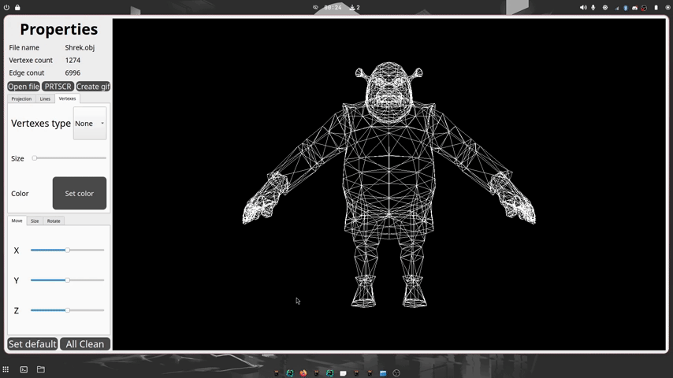

3DViewer v2.0
Description
A program for visualizing wireframe models in 3D space.
- The program is developed in C++ using the C++17 standard.
- Source code is located in the
src directory.
- Code style follows the Google coding style guidelines.
- The project uses a Makefile with standard targets: all, install, uninstall, clean, dvi, dist, tests.
-
Software Architecture:
- The program is designed following object-oriented programming principles.
- The Model-View-Controller (MVC) design pattern is utilized.
- The code is modular, separating business logic (models), visual representation (views), and controllers.
-
Program Features:
- Load wireframe models from OBJ files, supporting vertex and surface lists only.
- Translate the model by specified distances along the X, Y, and Z axes.
- Rotate the model by specified angles around its X, Y, and Z axes.
- Scale the model by a specified factor.

Additional Settings
-
Projection Type and Display Options:
- The program supports configuring the projection type (parallel or central).
- Users can customize edge types and vertex display options.
-
Appearance Settings:
- Option to select background color.
- Option to select vertex color and size.
- Option to select edge color and thickness.
-
Configuration Persistence:
- Settings are saved between program restarts.

Additional Functionality - Recording
-
Image Saving:
- Save model images in BMP and JPEG formats.
-
GIF Creation:
- Record user transformations of the loaded object into a GIF animation (10fps, 5s).

System Requirements
- Operating System: Linux or macOS
- C++17 compiler, CMake (version 3.22 or higher)
- GUI library with C++17 API (Qt)
- GTest library (for unit tests)
Project Structure
src/model - business logic codesrc/controller - controller codesrc/view - graphical interface codesrc/tests - unit tests (GTest)src/Makefile - project build file
Usage
To run the program:
cd ../src
make